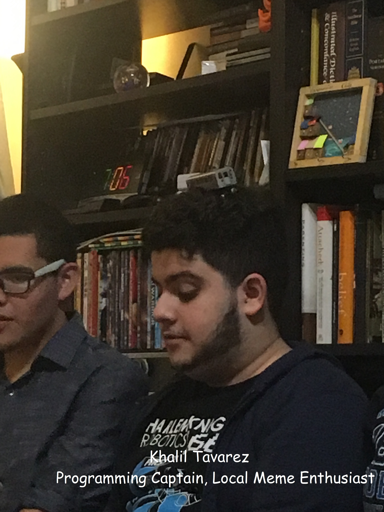

Khalil's Portfolio
This is my portfolio. There maybe others like it but this one is mine
Click here to see some data that needs to be changed later:
Click here to get a random message:
Who am I?
I was born in the Dominican Republic back in 2001 and lived there until I was in the second grade when I moved to\ New York. I lived in and went to school in Queens till I was in Highschool, where I still lived in Queens but went to school in Harlem right at the end of the 3 train line. It was there that I fell in love with Computer Science, I learned how to lead, and I began this chapter of my life
Notable projects
TinkoNaut: 2019 robot for frc robotics team Harlem Knights. Worked on general controls and testing of new technology and later on automatic featurs and pid loop tuning.
TinkoKong: 2018 robot for frc robotics team Harlem Knights. Worked on helping newer members of programming learn and programmed use of various utility electronics and sensors.
Classroom aid: A small Classroom aid for Chelsey Roebuck of Elite meant to be used in his classes for the Boys and Girl club. Also counted as the final project for College Engineering